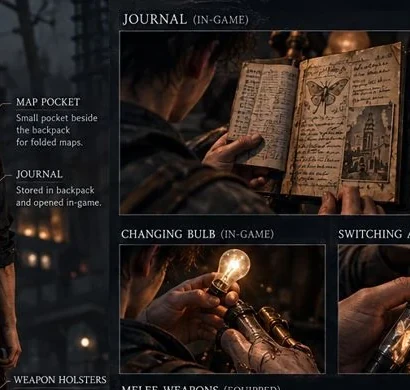
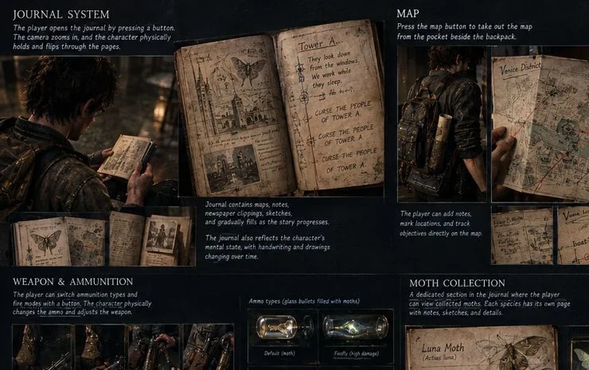
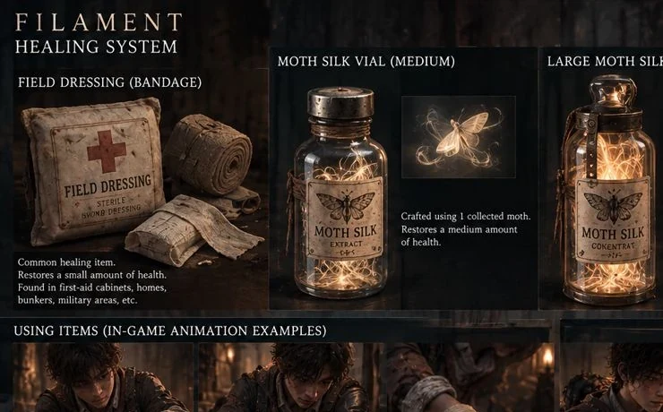
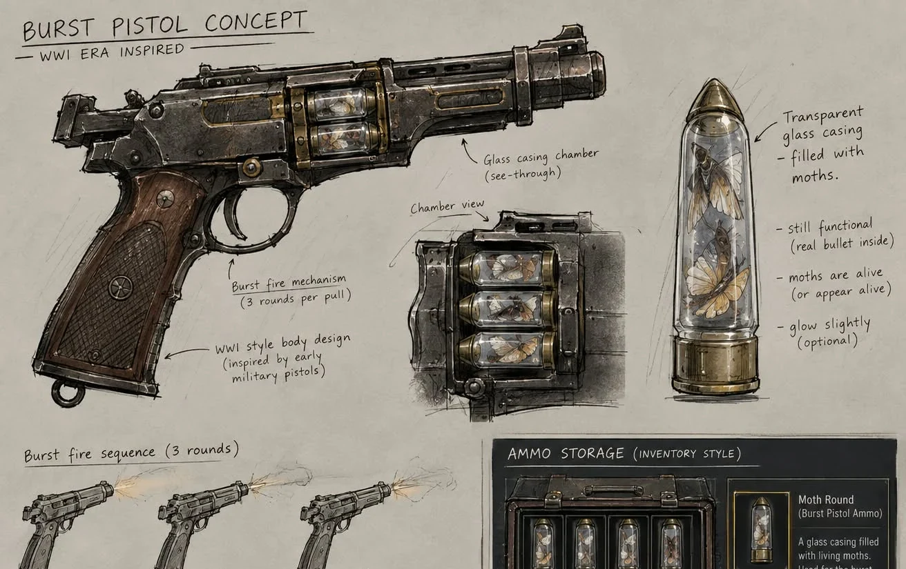
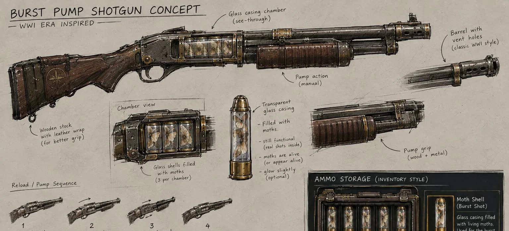

HOLD ON
TO THE LIGHT.
Survival is physical: turn a crank, replace a bulb, gather moths, and decide which resource you can afford to lose.
Every light
must be earned.
An analog mechanism powers a fragile bulb implanted in the boy's right hand. In the beginning, every second of illumination is an act of effort.

CHARGE
A small hands-on demonstration of a proposed mechanic — not actual gameplay.
A tiny life.
A difficult choice.
Found around sources of light, moths are the boy's companions and his scarce resources. Collecting them feels gentle. Using them can feel complicated.
LUNA MOTH
A pale-winged creature associated with transparent handgun rounds. One of the fragile creatures waiting near the city's lamps.
You can't carry
everything.
Resources exist as tactile objects. Notes are handled by hand, ammunition is filled with moths, and the journal is a real book carried in the boy's pack.

01 / PHYSICAL INVENTORY ↗
02 / HEALING & CRAFTING ↗CHOOSE HOW YOU ENDURE
Only Movie Mode regenerates health passively; all other modes require healing items.
Glass. Steel.
Living ammunition.
Period-inspired firearms with transparent moth-filled cartridges. The burst-mode mechanisms shown here are proposals, not approved gameplay canon.

